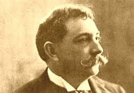
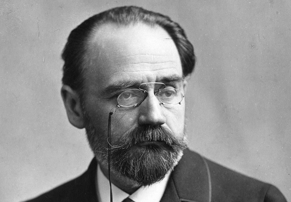

Contexto histórico
O Naturalismo é considerado uma evolução do Realismo, com o movimento surgindo na Europa, em meados do século XIX. Compartilha do mesmo contexto do Realismo, da industrialização proveniente da segunda revolução industrial, junto do crescimento da desigualdade social, o que deu combustível para sociólogos como Marx para desenvolverem modelos econômicos socialistas, influenciando diretamente o naturalismo. A mesma linha de pensamento influenciou Auguste Comte a pensar no positivismo, que é basicamente uma doutrina que divide a humanidade em três partes, com o científico sendo o mais evoluído deles. Comte alegava que a única forma de descobrir a verdade era através da investigação científica.
No mesmo período, Charles Darwin levava a público sua teoria de evolução das espécies, ressignificando o homem como resultado da natureza, e Hippolyte Taine propunha o determinismo, que dizia que o meio, a raça e o momento determinam as ações do indivíduo. Enquanto isso, no Brasil, o segundo reinado estava sob pressão por conta da Guerra do Paraguai e os protestos contra a escravatura. Podemos dizer que os naturalistas aqui em nosso país eram os abolicionistas e apoiadores do movimento republicano.
Características do Naturalismo
Como dito anteriormente, o Naturalismo é uma extensão do Realismo, e a característica importante que os diferencia é que enquanto o Realismo aborda as personagens com viés psicológico, o Naturalismo aborda as personagens com carácter patológico, possuindo um aspecto anatômico, dando importância à doença e ao quanto o ser humano é como qualquer animal.
Dito isso, o Naturalismo também carrega outras características do Realismo, como o emprego do determinismo, que diz que o homem é o produto do meio em que vive, o cientificismo, agora empregado de forma a entender que o homem é resultado da natureza e leis naturais, a objetividade e predominância da descritividade e a retratação de situações cotidianas, de pessoas das classes inferiores. E assim como o Realismo, também critica as desigualdades sofridas e a miséria.
Como características únicas, o Naturalismo tem por exemplo, o destaque para o lado mais animalesco do ser humano, retratando o instinto, a fome, e os comparando a animais por meio da zoomorfização. Além da frequente abordagem de patologias sociais, como os vícios, doenças e adultérios. Por fim, podemos definir as características do Naturalismo resumidamente como:
• Representação do lado animal do homem
• Cientificismo
• Determinismo
• Críticas à desigualdade e miséria
• Objetividade e descritividade
• Abordagem de patologias sociais
• Narrativas sobre temas cotidianos
Autores e obras
Aluísio de Azevedo
Aluísio de Azevedo nasceu em São Luís do Maranhão, e desde cedo se interessou pela arte, fazendo com que se mudasse para o Rio de Janeiro, com o objetivo de estudar na Imperial Academia de Belas Artes. Desenhava caricaturas para os jornais e posteriormente iniciou sua carreira como escritor, lançando obras naturalistas que o tornaram referência no gênero, como O mulato e O cortiço, que abordavam o preconceito racial e diversos temas sociais.

O Cortiço
O Cortiço foi um romance publicado em 1890 por Aluísio de Azevedo, obra que retrata o dia a dia das pessoas comuns em um cortiço no Rio de Janeiro. O romance aborda desigualdade social e retrata as personagens na ambição por ascensão social, destrinchando o comportamento de tais em aspectos animalescos. Segue um trecho da obra:
“E naquela terra encharcada e fumegante, naquela umidade quente e lodosa, começou a minhocar, a esfervilhar, a crescer, um mundo, uma coisa viva, uma geração, que parecia brotar espontânea, ali mesmo, daquele lameiro, e multiplicar-se como larvas no esterco.”
Émile Zola
Émile Zola nasceu em Paris, na França, e com 13 anos já escrevia seus primeiros textos, e com 20, foi reprovado para ingressar na faculdade de Direito, fazendo com que procurasse emprego em uma editora e posteriormente escrevendo suas obras naturalistas, como A Taberna e A besta humana.
